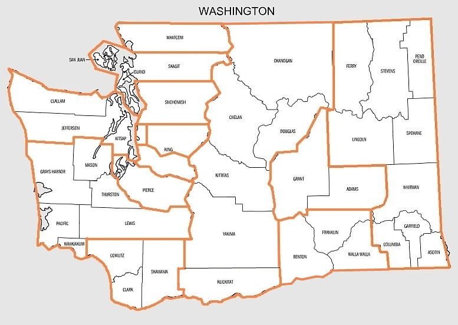

1. Skyline (Sammamish)
1. Lakeside (Seattle)
Grand Champions1. Tesla STEM (Redmond)
1. Lynden Christian
1. Orcas Island
1. New Life Christian (Ephrata)
2. Newport (Bellevue)
2. Interlake (Bellevue)
2. Sehome (Bellingham)
2. Meridian (Bellingham)
2. Tri-Cities Prep (Pasco)
2. Pope John Paul II (Lacey)
3. Jackson (Mill Creek)
3. Seattle Prep
3. Cleveland STEM (Seattle)
3. Seton Catholic (Vancouver)
3. Granger
3. Calvary Christian (Kennewick)
2026 State Mini-Teams Championship
Saturday November 14, 2026 at Kamiak High School in Mukilteo. Open to 3-person middle and high school teams, and individuals. Find details and registration link in the tournament announcement.
The 2027 Washington State Team Championship will take place on the days of February 26 and 27, 2027. The location is Sageview High School in Pasco.
All high school students in Washington, beginners and experienced, are invited to compete in their area League or Regional tournament. Teams and individuals that do well at Leagues and Regionals will qualify to compete in the 61st annual Washington State High School Chess Team Championships, to be held February 26 and 27, 2027 at Sageview High School in Pasco.

Above is a map showing the WHSCA regions throughout the state. More information can be found here.
| Date | Event(s) | Link(s) | Location(s) |
|---|---|---|---|
| November 14 | 2026 Washington State Teams Mini-Championship | Link | Kamiak High School |
| November (various dates) | Kingco, Wesco, Metro and Northwest League play begins | No link available | Various locations |
| January 9 |
|
|
|
| January 16 | SW Washington Regional | Link | Aberdeen High School |
| January 23 | Eastern Washington Regional | Link | Cheney High School |
| January 30 | Central Washington Regional | Link | Morgan High School (in Ellensburg) |
| February 6 |
|
|
|
| Feburary 13 | South King County Regional | Link | Thomas Jefferson High School in Auburn |
| February 26 and 27 |
|
No links available for either event | Both events are at Sageview High School in Pasco |
Welcome to High School scholastic chess in Washington State. WHSCA is a non-profit organization run by volunteers. The Washington High School Chess Association (WHSCA) organizes and runs the annual Mini Teams (open to MS/JHS/HS players) and High School Team State Championship tournaments, along with providing oversight to high school Leagues and HS Regional Qualifiers. The officers of the Association are elected annually by the Washington High School Chess Coaches at the High School State Team Tournament. The organization of the High School Individual State Championship has been transferred to the Washington Chess Federation WCF.